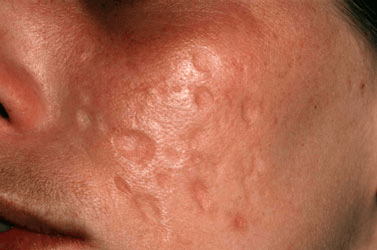

What is Acne Exoriee?
Acne excoriee, also known as "picker's acne," results when acne lesions
are compulsively squeezed and scratched, resulting in scabs and scars.
It is seen most commonly in adolescent girls and has been thought to be
associated with underlying depression, anxiety, or emotional problems.
Acne, also known as acne vulgaris, is thought to be caused by multiple
factors. Overproduction of a normal oil on the skin, called sebum,
increases under the influence of hormones. This, coupled with insufficient
shedding of exfoliating dead skin cells, plugs hair follicles.
The plugged follicle can become inflamed and have increased growth of
normal skin bacteria, Propionibacterium acnes. Medications such as
lithium, cortisone, hormones, iodides, some seizure medications, or
isoniazid can also cause acne lesions.
Acne can result in permanent scarring, so minimizing breakouts is important.
